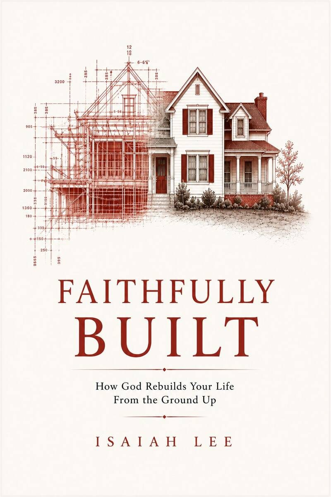

FAITHFULLY BUILT — A FREE CHAPTER
Your story isn’t over.
No matter where you are in life, God is still working. Receive a FREE chapter of Faithfully Built and find encouragement to keep going.
GET MY FREE CHAPTERFree. Sent to your inbox after a quick signup.

For the person who’s still rebuilding.
Maybe life hasn’t turned out the way you expected. Maybe you’ve experienced setbacks, disappointment, or seasons where you questioned your direction.
But where you are today doesn’t have to be where your story ends.
Faithfully Built is a reminder that even in the rebuilding, God is still working.
A little encouragement for the journey.
-
Encouragement
Words to remind you that your circumstances don’t define your future.
-
Perspective
A reminder that rebuilding takes time and every step matters.
-
Hope
Faith-centered encouragement to keep moving forward.
You’re still being built.
Your journey isn’t finished. Take a moment to receive some encouragement for the road ahead.
SEND ME MY FREE CHAPTERFree. Sent to your inbox after a quick signup.